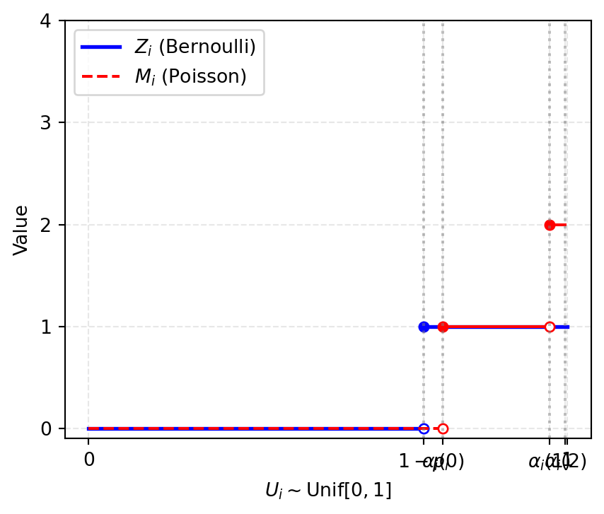

45 Lecture 21.2: Law of Rare Events
45.1 Introduction
Total variation distance is exceptionally well-adapted to discrete probability measures all defined on the same discrete space (e.g., Bernoulli, Poisson, Binomial).
Theorem 45.1 (The Law of Rare Events) Let \(p_1, \dots, p_n \in [0, 1]\) and let \(\{X_j\}_{j=1}^n\) be independent random variables with \(X_j \sim \text{Bernoulli}(p_j)\) for each \(j = 1, \dots, n\). Define the sum \(S_n := \sum_{j=1}^n X_j\). Let \(N \sim \text{Poisson}\left(\sum_{j=1}^n p_j\right)\). Regarding both \(\mu_{S_n}\) and \(\mu_N\) as elements of \(\text{Prob}(\mathbb{N}_0, 2^{\mathbb{N}_0})\) and writing \(d_{\text{TV}}(S_n, N) := d_{\text{TV}}(\mu_{S_n}, \mu_N)\), we have: \[ d_{\text{TV}}(S_n, N) \le \sum_{j=1}^n p_j^2. \]
Corollary 45.1 (Poisson Approximation of Binomial) If \(p_j = \frac{\lambda}{n}\) for all \(j=1, \dots, n\) with \(\lambda > 0\) and \(n > \lambda\) (so that \(p_j \in (0,1)\)), then \(\sum_{j=1}^n p_j = \lambda\), hence \(S_n \sim \text{Binomial}\left(n, \frac{\lambda}{n}\right)\) and \(N \sim \text{Poisson}(\lambda)\). The bound gives: \[ d_{\text{TV}}\left(\text{Binomial}\left(n, \frac{\lambda}{n}\right), \text{Poisson}(\lambda)\right) \le n \cdot \left(\frac{\lambda}{n}\right)^2 = \frac{\lambda^2}{n} \xrightarrow{n \to \infty} 0. \]
45.2 Proof of Theorem 45.1 Via Convolution Bound
Lemma 45.1 (Convolution Bound for Total Variation) Let \(\mu_1, \dots, \mu_n\) and \(\nu_1, \dots, \nu_n\) be probability measures on \((\mathbb{R}^d, \mathcal{B}(\mathbb{R}^d))\). Then: \[ d_{\text{TV}}(\mu_1 * \mu_2 * \cdots * \mu_n, \, \nu_1 * \nu_2 * \cdots * \nu_n) \le \sum_{j=1}^n d_{\text{TV}}(\mu_j, \nu_j). \]
Proof (Proof of Theorem 45.1). Let \(\{N_j\}_{j=1}^n\) be independent Poisson random variables with \(N_j \sim \text{Poisson}(p_j)\). By the convolution property of Poisson laws, \(\sum_{j=1}^n N_j \sim \text{Poisson}\left(\sum_{j=1}^n p_j\right)\), so \(N \stackrel{d}{=} \sum_{j=1}^n N_j\).
Since the \(X_j\) are independent and the \(N_j\) are independent, the law of each sum is the convolution of the individual laws: \(\mu_{S_n} = \mu_{X_1} * \cdots * \mu_{X_n}\) and \(\mu_{N} = \mu_{N_1} * \cdots * \mu_{N_n}\). Using Lemma 45.1 and the exact Bernoulli–Poisson distance \(d_{\text{TV}}(\text{Bernoulli}(p), \text{Poisson}(p)) = p(1 - e^{-p})\) computed in Lecture 21.1: \[ \begin{aligned} d_{\text{TV}}(S_n, N) &= d_{\text{TV}}\left(X_1 + \cdots + X_n, \, N_1 + \cdots + N_n\right) \\ &= d_{\text{TV}}(\mu_{X_1} * \cdots * \mu_{X_n}, \, \mu_{N_1} * \cdots * \mu_{N_n}) \\ &\le \sum_{j=1}^n d_{\text{TV}}(\mu_{X_j}, \mu_{N_j}) \\ &= \sum_{j=1}^n p_j (1 - e^{-p_j}). \end{aligned} \]
Since \(1 - e^{-p_j} = \int_0^{p_j} e^{-x} \, dx \le \int_0^{p_j} 1 \, dx = p_j\), we have \(p_j(1 - e^{-p_j}) \le p_j^2\). Substituting this yields: \[ d_{\text{TV}}(S_n, N) \le \sum_{j=1}^n p_j^2. \]
45.3 Couplings
A coupling puts two random variables with prescribed distributions on the same probability space, so that we can decide how they depend on each other.
Definition 45.1 (Coupling) Given probability measures \(\mu\) and \(\nu\) on \((S, \mathcal{B})\), a coupling of \((\mu, \nu)\) is a pair of random variables \((X, Y)\) defined on a common probability space, taking values in \((S, \mathcal{B})\), such that \(\mu_X = \mu\) and \(\mu_Y = \nu\).
In other words, a coupling is a probability measure on \((S \times S, \mathcal{B} \otimes \mathcal{B})\) whose marginal distributions are \(\mu\) and \(\nu\) respectively. (For instance, the product measure \(\mu \otimes \nu\) is the independent coupling).
For intuition, the coupling determines how \(X\) and \(Y\) are related to each other, while keeping their individual distributions fixed.
Lemma 45.2 (Coupling Inequality) If \((X, Y)\) is any coupling of the probability measures \(\mu\) and \(\nu\) on \((S, \mathcal{B})\), then: \[ d_{\text{TV}}(\mu, \nu) \le \mathbb{P}(X \neq Y) \] (Here \(\{X \ne Y\}\) is assumed measurable, which holds whenever the diagonal \(\{(x,x) : x \in S\}\) belongs to \(\mathcal{B} \otimes \mathcal{B}\); this is the case, for instance, when \(S\) is a separable metric space with its Borel \(\sigma\)-algebra.)
Taking the infimum over all couplings, the lemma gives \(d_{\text{TV}}(\mu, \nu) \le \inf \{\mathbb{P}(X \ne Y) : (X, Y) \text{ a coupling of } (\mu, \nu)\}\). On a standard Borel space the infimum is in fact attained by the maximal coupling, so equality holds and total variation distance has a probabilistic interpretation:
- It is the smallest possible probability that two random variables with distributions \(\mu\) and \(\nu\) must differ, when we are free to choose how they are coupled.
Proof (Proof of Lemma 45.2). Fix any event \(B \in \mathcal{B}\): \[ \begin{aligned} |\mu(B) - \nu(B)| &= |\mathbb{P}(X \in B) - \mathbb{P}(Y \in B)| \\ &= \left| \mathbb{E}\left[ \mathbb{I}_{\{X \in B\}} - \mathbb{I}_{\{Y \in B\}} \right] \right| \\ &\le \mathbb{E}\left[ \left| \mathbb{I}_{\{X \in B\}} - \mathbb{I}_{\{Y \in B\}} \right| \right] \\ &= \mathbb{E}\left[ \mathbb{I}_{\{\{X \in B\} \Delta \{Y \in B\}\}} \right] \\ &= \mathbb{P}\left( \{X \in B\} \Delta \{Y \in B\} \right). \end{aligned} \] Since \(\{X \in B\} \Delta \{Y \in B\} \subseteq \{X \neq Y\}\), we obtain: \[ |\mu(B) - \nu(B)| \le \mathbb{P}(X \neq Y). \] Taking the supremum over all \(B \in \mathcal{B}\) completes the proof.
45.4 Proof of Theorem 45.1 Via Explicit Coupling Construction
We construct a joint probability space \((\Omega, \mathcal{F}, \mathbb{P})\) carrying i.i.d. Uniform random variables \(U_j \sim \text{Unif}[0, 1]\) for \(j = 1, \dots, n\).
45.4.1 Construction of \(Z_j \sim \text{Bernoulli}(p_j)\)
Define \(Z_j := \mathbb{I}_{\{U_j \in (1 - p_j, 1]\}}\). Then: \[ \mathbb{P}(Z_j = 1) = \mathbb{P}(U_j \in (1 - p_j, 1]) = 1 - (1 - p_j) = p_j. \] So \(Z_j \sim \text{Bernoulli}(p_j)\), and since \(Z_j\) is a measurable function of \(U_j\) alone, the \(Z_j\) are independent. Thus \(T := \sum_{j=1}^n Z_j \stackrel{d}{=} S_n\).
45.4.2 Construction of \(M_j \sim \text{Poisson}(p_j)\)
Let \(\alpha_j(k) := \mathbb{P}(\text{Poisson}(p_j) \le k) = \sum_{l=0}^k e^{-p_j} \frac{p_j^l}{l!}\) with \(\alpha_j(-1) := 0\). Define \(M_j := \sum_{k=0}^\infty k \cdot \mathbb{I}_{\{\alpha_j(k-1) < U_j \le \alpha_j(k)\}}\). Since \(\alpha_j\) is strictly increasing with \(\alpha_j(k) \uparrow 1\), the intervals \((\alpha_j(k-1), \alpha_j(k)]\), \(k \ge 0\), partition \((0, 1]\), so exactly one term in the sum is nonzero and: \[ \mathbb{P}(M_j = k) = \mathbb{P}(\alpha_j(k-1) < U_j \le \alpha_j(k)) = \alpha_j(k) - \alpha_j(k-1) = e^{-p_j} \frac{p_j^k}{k!}. \] So \(M_j \sim \text{Poisson}(p_j)\), and again the \(M_j\) are independent because \(M_j\) depends only on \(U_j\). By the convolution property of Poisson laws, \(M := \sum_{j=1}^n M_j \stackrel{d}{=} N \sim \text{Poisson}\left(\sum_{j=1}^n p_j\right)\).
Note that \(Z_j\) and \(M_j\) are built from the same uniform \(U_j\); this dependence is precisely what makes \((T, M)\) a useful coupling of \((\mu_{S_n}, \mu_N)\).
45.4.3 Visualization of the Joint Coupling \((Z_i, M_i)\)
45.4.4 Evaluating the Difference \(\mathbb{P}(Z_j \neq M_j)\)
Since \(T \stackrel{d}{=} S_n\) and \(M \stackrel{d}{=} N\), the pair \((T, M)\) is a coupling of \((\mu_{S_n}, \mu_N)\), so Lemma 45.2 applies. Moreover \(\{T \ne M\} \subseteq \bigcup_{j=1}^n \{Z_j \ne M_j\}\), because \(Z_j = M_j\) for every \(j\) forces \(T = M\); the union bound then gives: \[ d_{\text{TV}}(S_n, N) \le \mathbb{P}(T \neq M) \le \sum_{j=1}^n \mathbb{P}(Z_j \neq M_j) \]
To compute \(\mathbb{P}(Z_j \ne M_j)\), note the elementary inequality \(1 - p_j \le e^{-p_j} = \alpha_j(0) \le \alpha_j(1)\), so the interval \([0,1]\) splits into four consecutive pieces:
| Range of \(U_j\) | \(Z_j\) | \(M_j\) | Agree? |
|---|---|---|---|
| \([0,\, 1 - p_j]\) | \(0\) | \(0\) | yes |
| \((1 - p_j,\, \alpha_j(0)]\) | \(1\) | \(0\) | no |
| \((\alpha_j(0),\, \alpha_j(1)]\) | \(1\) | \(1\) | yes |
| \((\alpha_j(1),\, 1]\) | \(1\) | \(\ge 2\) | no |
Adding the lengths of the two disagreement intervals: \[ \begin{aligned} \mathbb{P}(Z_j \neq M_j) &= [\alpha_j(0) - (1 - p_j)] + [1 - \alpha_j(1)] \\ &= [e^{-p_j} - (1 - p_j)] + [1 - (e^{-p_j} + e^{-p_j} p_j)] \\ &= p_j - p_j e^{-p_j} = p_j (1 - e^{-p_j}) \le p_j^2, \end{aligned} \] where the last step again uses \(1 - e^{-p_j} \le p_j\).
Summing over \(j=1, \dots, n\) yields: \[ d_{\text{TV}}(S_n, N) \le \sum_{j=1}^n p_j^2. \]
45.5 Optimal Transport & Wasserstein Distance
Couplings play a foundational role in large deviations, stochastic analysis, and optimal transport.
Definition 45.2 (Wasserstein Distance) For \(p \ge 1\), let \(\text{Prob}_p(\mathbb{R}^d, \mathcal{B}(\mathbb{R}^d))\) denote the set of Borel probability measures \(\mu\) on \(\mathbb{R}^d\) with finite \(p\)-th moment \(\left(\int_{\mathbb{R}^d} |x|^p \mu(dx) < \infty\right)\).
The \(p\)-Wasserstein distance between \(\mu, \nu \in \text{Prob}_p(\mathbb{R}^d)\) is: \[ W_p(\mu, \nu) := \left( \inf \left\{ \mathbb{E}\left[|X - Y|^p\right] : (X, Y) \text{ is a coupling of } (\mu, \nu) \right\} \right)^{1/p}. \]
Unlike \(d_{\text{TV}}\), the metric \(W_p\) incorporates the underlying geometry of \(\mathbb{R}^d\): it measures how far apart \(X\) and \(Y\) are, not merely whether they differ. The two topologies are not comparable on all of \(\text{Prob}_p(\mathbb{R}^d)\):
- \(W_p\) convergence does not imply \(d_{\text{TV}}\) convergence: \(W_p(\delta_{1/n}, \delta_0) = 1/n \to 0\), while \(d_{\text{TV}}(\delta_{1/n}, \delta_0) = 1\) for every \(n\).
- \(d_{\text{TV}}\) convergence does not imply \(W_p\) convergence: for \(\mu_n := (1 - \tfrac1n)\delta_0 + \tfrac1n \delta_{n^2}\) we have \(d_{\text{TV}}(\mu_n, \delta_0) = \tfrac1n \to 0\), yet \(W_p(\mu_n, \delta_0) = (n^{2p}/n)^{1/p} \to \infty\).
On a set of measures all supported in a fixed bounded set of diameter \(D\), however, the coupling inequality does give \(W_p(\mu, \nu) \le D \cdot d_{\text{TV}}(\mu, \nu)^{1/p}\), so there the \(W_p\)-topology is genuinely weaker than \(d_{\text{TV}}\).
45.6 Takeaways
The Law of Rare Events is a non-asymptotic theorem, not a limit theorem.
Theorem 45.1 states that for any \(n\) and any \(p_1, \dots, p_n \in [0,1]\), the sum of independent Bernoulli variables satisfies \(d_{\text{TV}}(S_n, N) \le \sum_{j=1}^n p_j^2\) where \(N \sim \text{Poisson}(\sum_j p_j)\). There is no hypothesis that the \(p_j\) be small, equal, or that \(n \to \infty\): the bound is an explicit error estimate valid at every fixed \(n\), which is exactly what makes it usable in applications. The classical statement “Binomial \(\to\) Poisson” is the corollary Corollary 45.1 obtained by specializing to \(p_j = \lambda/n\), giving the quantitative rate \(\lambda^2/n\).The bound is driven by the exact Bernoulli–Poisson distance \(p(1 - e^{-p})\).
Both proofs reduce to the single-coordinate computation \(d_{\text{TV}}(\text{Bernoulli}(p), \text{Poisson}(p)) = p(1 - e^{-p})\) from Lecture 21.1, followed by the elementary bound \(1 - e^{-p} \le p\). The quadratic term \(p_j^2\) is therefore a relaxation: the sharper conclusion \(d_{\text{TV}}(S_n, N) \le \sum_{j=1}^n p_j(1 - e^{-p_j})\) holds and is strictly better whenever the \(p_j\) are not negligible.Two proof strategies, one estimate: convolution versus coupling.
The first proof is analytic: Lemma 45.1 says total variation is subadditive under convolution, so the error accumulates one coordinate at a time. The second is probabilistic: it builds all \(2n\) variables from \(n\) i.i.d. uniforms via inverse-CDF sampling and bounds the disagreement probability directly. Both routes produce the same sum \(\sum_j p_j(1 - e^{-p_j})\), since both localize the discrepancy to individual coordinates — the convolution bound is, in effect, the coupling argument done at the level of measures.Coupling converts a distance between measures into a probability of disagreement.
Definition 45.1 fixes the marginals \(\mu\) and \(\nu\) while leaving the dependence structure free, and Lemma 45.2 gives \(d_{\text{TV}}(\mu, \nu) \le \mathbb{P}(X \ne Y)\) for every such choice. The strategy is therefore to design a coupling that makes \(X\) and \(Y\) agree as often as possible: any coupling yields a valid upper bound, and a clever one yields a sharp bound. Here the design step is to drive \(Z_j\) and \(M_j\) from the same uniform \(U_j\), which forces them to agree except on the two small intervals \((1 - p_j, e^{-p_j}]\) and \((\alpha_j(1), 1]\).The union bound is what makes the error additive.
The passage from the single-coordinate estimate to the global one rests on \(\{T \ne M\} \subseteq \bigcup_{j=1}^n \{Z_j \ne M_j\}\): the two sums can only differ if some coordinate pair differs. This is why the total error is a sum of \(n\) per-coordinate errors, and why the bound degrades linearly in \(n\) while each term is quadratic in \(p_j\) — a trade-off that is favorable precisely in the “rare events” regime where \(\max_j p_j\) is small relative to \(1/\sqrt{n}\).Total variation and Wasserstein measure different things.
\(d_{\text{TV}}\) asks whether \(X\) and \(Y\) differ; \(W_p\) of Definition 45.2 asks how far apart they are, and so is sensitive to the geometry of the state space. Neither topology dominates the other on \(\text{Prob}_p(\mathbb{R}^d)\): \(\delta_{1/n} \to \delta_0\) in \(W_p\) but not in \(d_{\text{TV}}\), while \((1 - \tfrac1n)\delta_0 + \tfrac1n \delta_{n^2} \to \delta_0\) in \(d_{\text{TV}}\) but not in \(W_p\). On uniformly bounded supports the comparison \(W_p \le D \cdot d_{\text{TV}}^{1/p}\) does hold. Total variation is the right tool here because Bernoulli and Poisson laws live on the common discrete space \(\mathbb{N}_0\), where “differ” is the natural unit of error.